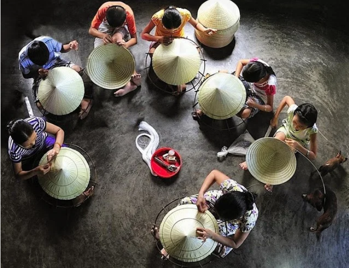

Các Làng Nghề Tiêu Biểu
Làng Gốm Phước Tích
Địa chỉ: Phước Tích, Hương Thủy, Thừa Thiên Huế
Làng gốm Phước Tích nổi tiếng với những sản phẩm gốm thủ công truyền thống, mang đậm dấu ấn văn hóa của người dân Huế. Các sản phẩm gốm ở đây rất đa dạng, từ đồ gia dụng đến đồ trang trí, đặc biệt là các sản phẩm gốm nâu và gốm men xanh.
Tìm hiểu thêm về làng gốm Phước Tích
Làng Nón Lá Bao La

Địa chỉ: Bao La, Quảng Điền, Thừa Thiên Huế
Làng nón lá Bao La nổi tiếng với nghề làm nón lá thủ công, được các nghệ nhân truyền lại qua nhiều thế hệ. Những chiếc nón lá ở đây được làm từ lá cọ, tạo ra những sản phẩm không chỉ đẹp mà còn bền chắc. Nón lá Bao La còn là một trong những biểu tượng văn hóa đặc trưng của Huế.
Tìm hiểu thêm về làng nón lá Bao La
Làng Dệt Lụa Tân Lập

Địa chỉ: Tân Lập, Quảng Điền, Thừa Thiên Huế
Làng dệt lụa Tân Lập nổi tiếng với nghề dệt lụa tơ tằm truyền thống, một nghề thủ công tinh xảo có từ hàng trăm năm nay. Các sản phẩm lụa Tân Lập được biết đến với chất lượng vượt trội, mềm mịn và bóng loáng, thường được sử dụng trong việc may áo dài và trang phục truyền thống của người Việt Nam.
Tìm hiểu thêm về làng dệt lụa Tân Lập